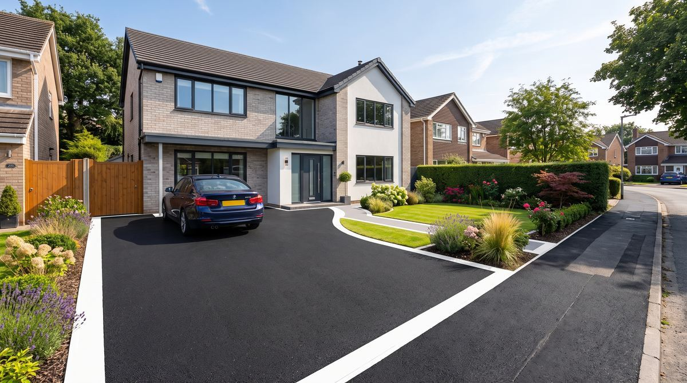
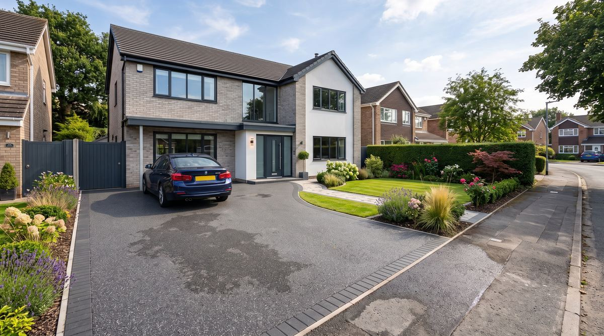
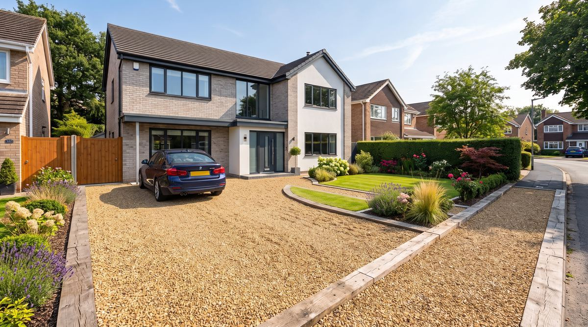

Bournemouth’s Trusted Driveway Installers
Tarmac, block paving, resin bound & gravel driveways installed across Bournemouth, Poole & the Dorset coast. Free no-obligation quotes — most jobs completed within days.
- No deposit, no hidden fees
- Fully guaranteed workmanship
- Local crews, not subcontracted nationally
Get Your Free Quote
Free, no-obligation quotes for Bournemouth & Poole homeowners.
By submitting you agree to be contacted about your enquiry. No spam, ever. See our privacy policy.
The Most Popular Driveway Surfaces in Bournemouth
Every driveway, drive and budget is different — compare the four most requested surfaces below, or tell us what you need and we’ll recommend the best fit.

Tarmac Driveways
Durable, cost-effective and quick to install — the classic choice for busy driveways.

Block Paving Driveways
Wide range of colours and patterns, easy to repair, adds real kerb appeal.

Resin Bound Driveways
Smooth, seamless and permeable — low maintenance with a premium finish.

Gravel Driveways
The most affordable option — fast to lay with excellent natural drainage.
Built On Trust, Not Just Tarmac
Fully Insured & Guaranteed
Every install is backed by public liability cover and a written workmanship guarantee — no cutting corners.
Transparent, Fixed Pricing
No call-out charges, no upselling on site. The quote you’re given is the price you pay.
Local Bournemouth Crews
We use our own local teams — not a national subcontractor network — so quality stays consistent.
Fast Turnaround
Most driveways are surveyed within days and installed within 1–3 days depending on size and material.
SUDS & Drainage Compliant
Permeable options available so your new driveway meets UK drainage regulations without a planning headache.
5.0 Average Rating
Rated by real Bournemouth & Poole homeowners — see our full reviews on the FAQ & reviews page.
From Enquiry to Finished Driveway in Four Steps
Request a Free Quote
Fill in the form or call us — tell us the size, current surface and material you’re considering.
Free Site Visit
We visit to measure up, check access and drainage, and confirm a fixed, no-obligation price.
Professional Install
Excavation, base preparation, edging and surfacing — most driveways completed in 1–3 days.
Guaranteed Finish
Final inspection with you, plus a written guarantee on materials and workmanship.
What Bournemouth Homeowners Say
“Absolutely delighted with our new resin driveway. Tidy, professional and finished a day early.”
“Fair price, no pressure to upgrade on the day, and the block paving looks fantastic. Highly recommend.”
“Old tarmac drive was falling apart. New surface has completely transformed the front of the house.”
Sample reviews shown for design purposes — replace with verified customer reviews (e.g. Google/Checkatrade) before launch.
Driveway Installers Covering Bournemouth & the Dorset Coast
We install and repair driveways throughout the BCP area and beyond.
How Much Does a Driveway Cost in Bournemouth?
Prices vary by material, size and groundwork — as a rough guide:
- Gravel: from £30–£50 per m²
- Tarmac: from £40–£70 per m²
- Block paving: from £60–£100 per m²
- Resin bound: from £70–£110 per m²
Common Driveway Questions
Can’t find what you’re after? See our full FAQ page or give us a call.
Most driveways cost between £30 and £110 per m² depending on material, groundwork and access. Gravel is the most affordable option, resin bound typically the most expensive. See our full cost guide for a breakdown by material.
Most residential driveways are completed in 1–3 days, depending on size, material and whether the old surface needs removing first.
Usually not, provided the surface is permeable (gravel, permeable block paving or resin bound with a SUDS-compliant base) or drains onto your own garden rather than the street. Impermeable surfaces over 5m² may require permission — we can advise during your free site visit.
Yes — if your project needs a dropped kerb we can advise on the BCP Council application and permission process as part of your quote.
We install driveways throughout Bournemouth, Poole, Christchurch, Ferndown, Wimborne, New Milton and the surrounding Dorset coast.
Ready to Transform Your Driveway?
Get a free, no-obligation quote from Bournemouth’s local driveway specialists — most quotes returned within 24 hours.